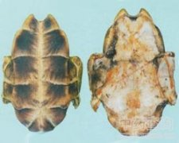

龟甲

拼音
Guī Jiǎ
别名
龟板、乌龟壳、乌龟板、下甲、血板、烫板
来源
本品为龟科动物乌龟Chinemys reevesii （Gray）的背甲及腹甲。全年均可捕捉，以秋、冬二季为多，捕捉后杀死，剥取背甲及腹甲，除去残肉，称为“血板”。或用沸水烫死，剥取背甲及腹甲，除去残肉，晒干者，称为“烫板”。
生境分布
无生境分布数据
药材特点
无特点数据
性状
本品背甲及腹甲由甲桥相连，背甲稍长于腹甲，与腹甲常分离。背甲呈长椭圆形拱状，长7.5～22cm,宽6～18cm；外表面棕褐色或黑褐色，脊棱3条；颈盾1块，前窄后宽；椎盾5块，第1椎盾长大于宽或近相等，第2～4椎盾宽大于长；肋盾两侧对称，各4块，缘盾每侧11块，臀盾2块。腹甲呈板片状，近长方椭圆形，长6.4～21cm，宽5.5～17cm；外表面淡黄棕色至棕黑色，盾片12块，每块常具紫褐色放射状纹理，腹盾、胸盾和股盾中缝均长，喉盾、肛盾次之，肱盾中缝最短；内表面黄白色至灰白色，有的略带血迹或残肉，除净后可见骨板9块，呈锯齿状嵌接；前端钝圆或平截，后端具三角形缺刻，两侧残存呈翼状向斜上方弯曲的甲桥。质坚硬。气微腥，味微咸。
性味
咸、甘，微寒。
功能主治
滋阴潜阳，益肾强骨，养血补心。用于阴虚潮热，骨蒸盗汗，头晕目眩，虚风内动，筋骨痿软，心虚健忘。
用法用量
9～24g，先煎。
化学成分
无化学成分数据
药理作用
1：无药理作用数据
摘录
《中国药典》